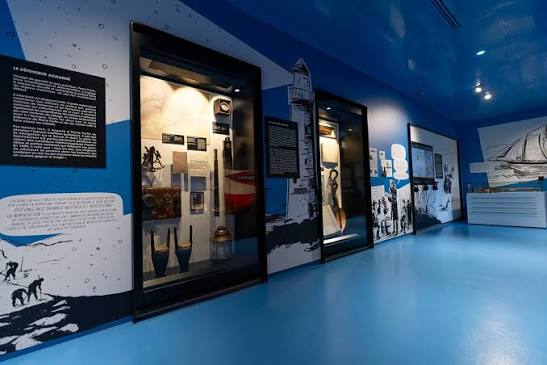
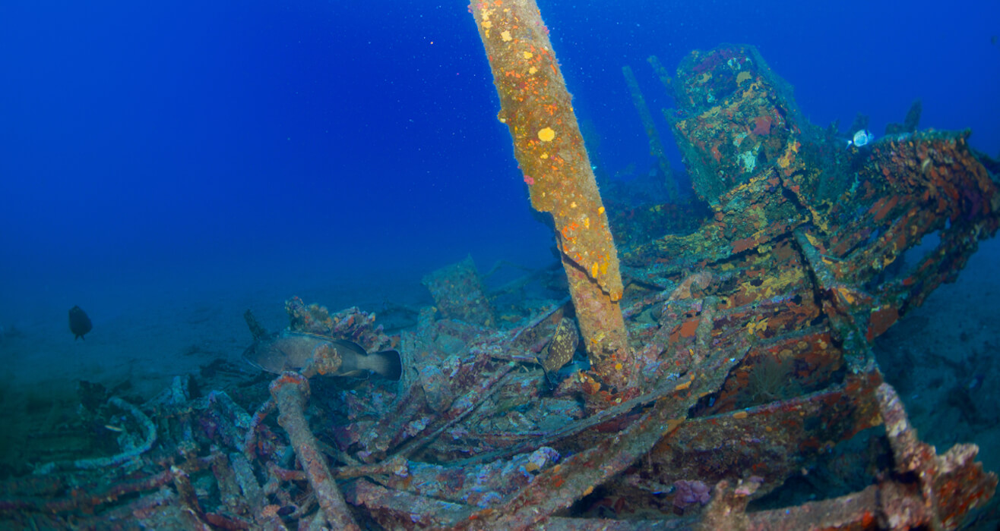

Expositions
Les gardiens de la mer
Un parcours immersif sur les savoirs autochtones liés à la pêche, à la navigation et au respect des cycles marins, présenté en collaboration avec des communautés locales.
Cette exposition rend hommage aux pêcheurs, aux familles et aux communautés qui ont bâti leur vie autour de la mer. À travers des témoignages audio, des photographies anciennes et des objets de la vie [...]
En savoir plus...Le golfe fragile
Une exposition interactive sur les écosystèmes du Saint-Laurent : baleines, homards, morues et plancton, et les menaces posées par les changements climatiques.

Cette exposition propose une immersion dans l’écosystème unique du golfe du Saint-Laurent, un milieu riche mais vulnérable. À l’aide de maquettes, d’aquariums et de projections vidéo, les visiteurs explorent la diversité des espèces marines et les liens qui les unissent dans un équilibre délicat. Le parcours met en évidence les menaces qui pèsent sur ce milieu : pollution plastique, surpêche, réchauffement des eaux, disparition d’habitats essentiels. Les visiteurs peuvent expérimenter des installations interactives où leurs choix (par exemple de techniques de pêche ou de modes de consommation) influencent la santé virtuelle d’un écosystème reconstitué. « Le golfe fragile » invite à une réflexion collective : comment protéger un espace naturel qui nourrit des communautés humaines tout en abritant une biodiversité exceptionnelle ? L’exposition souligne l’importance d’une gestion durable et responsable, qui conditionne l’avenir de la mer et de ceux qui en dépendent.
Trésors engloutis
Plongez dans l’histoire maritime grâce à des maquettes de navires, des cartes anciennes et des artefacts récupérés des fonds du golfe.

Mystérieuse et captivante, cette exposition transporte les visiteurs au fond des mers, là où reposent les vestiges de navires disparus. À travers des artefacts retrouvés lors de fouilles archéologiques sous-marines — ancres, porcelaines, outils de navigation — on découvre des récits de naufrages qui ont marqué l’histoire du golfe. Des reconstitutions 3D et des projections immersives permettent de plonger virtuellement sous l’eau pour explorer ces épaves, témoins silencieux de la navigation et du commerce maritime. Chaque objet raconté dévoile une facette du quotidien des marins d’autrefois : une bouteille de rhum, un sextant usé, une lettre jamais envoyée. Au-delà du mystère et du romantisme des naufrages, l’exposition met aussi en lumière le travail des archéologues et plongeurs qui consacrent leur vie à protéger ce patrimoine fragile. Elle rappelle que ces trésors ne sont pas seulement des reliques, mais des fragments d’histoires humaines, liés à la mer et à ses dangers.